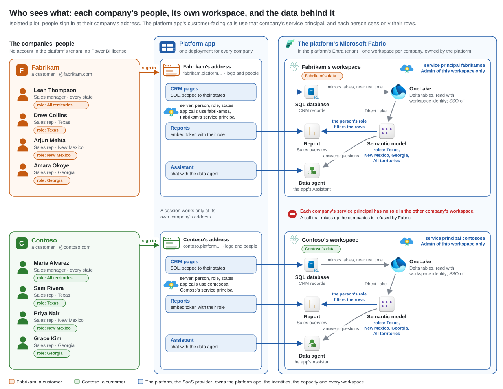
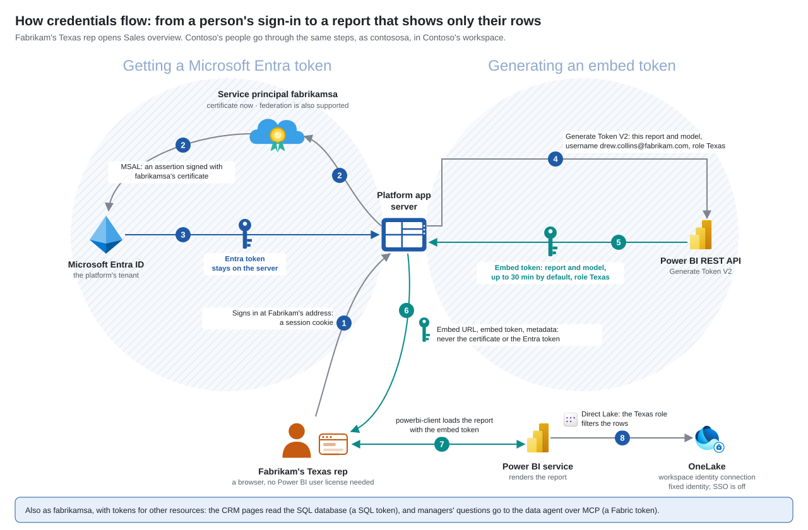
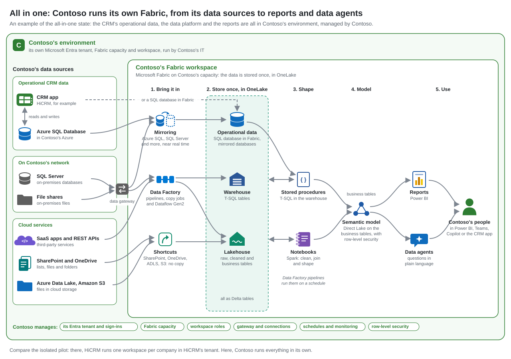

HiCRM sample architecture
HiCRM on Microsoft Fabric: who sees what, how credentials flow, and an all-in-one option
HiCRM is a sample CRM for SaaS. In the isolated live pilot, each customer company has its own Fabric workspace and service principal. Its people see an embedded Power BI report filtered to their rows, without needing Microsoft accounts or Power BI user licenses: app owns data. Live reports need a supported Fabric capacity; demo mode uses an emulator. The last diagram shows another option: a customer that runs its own Fabric, from its data sources to reports and data agents.
Who sees what

- Each company's people sign in at their company's address with HiCRM passwords, or local View as cards for demos. They need no account in HiCRM's Entra tenant and no Power BI user license. Work-account sign-in is a design option, not built.
- HiCRM's customer-facing calls use that company's service principal, an app registration in HiCRM's Entra tenant, not a person's account: fabrikamsa for Fabrikam, contososa for Contoso. In isolated mode, each is Admin of its own workspace only, so its token can't reach the other company's workspace. The platform identity handles workspace setup and hand-over.
- Inside a workspace, the data flows like this:
- The CRM records live in a SQL database in Fabric. Fabric automatically mirrors supported tables to OneLake as Delta tables, near real time (SQL mirroring).
- The semantic model reads OneLake with Direct Lake through a fixed connection: workspace identity, SSO off. Fabric manages that identity's credentials; HiCRM stores no OneLake credential (Direct Lake security).
- The model has one row-level security role per territory: Texas, New Mexico and Georgia, plus All territories for managers.
- The report shows each person only their rows.
- The data agent answers questions about the same data, and the app shows it as the Assistant. For now it reads a copy of the model without roles, so only managers' questions reach it, and reps get answers scoped to their states from the CRM database. Row-level security for the agent comes later.
| Person | Role | Sees | RLS role in the embed token |
|---|---|---|---|
| Leah Thompson | Fabrikam sales manager | Every state | All territories |
| Drew Collins | Fabrikam sales rep | Texas only | Texas |
| Arjun Mehta | Fabrikam sales rep | New Mexico only | New Mexico |
| Amara Okoye | Fabrikam sales rep | Georgia only | Georgia |
Contoso is the same: Maria Alvarez is the manager, Sam Rivera covers Texas, Priya Nair covers New Mexico and Grace Kim covers Georgia.
How credentials flow

| # | Step | Credential | Kept where | Lifetime |
|---|---|---|---|---|
| 1 | Person signs in at their company's address. | HiCRM password, or local View as for demos, then a signed session cookie. Work-account sign-in is not built. | Browser, host-only HttpOnly cookie. | 8 hours by default; sign-out or access changes can end it earlier. |
| 2 | HiCRM's server signs in to Microsoft Entra ID as fabrikamsa with MSAL client credentials. | An assertion signed with fabrikamsa's certificate. The code also supports a managed or workload identity token as a federated assertion. | The certificate's private key in an encrypted file (pilot) or Azure Key Vault (production). Federation stores no service-account key. | The certificate assertion: 10 minutes in this MSAL version. A federated token has its issuer's expiry. |
| 3 | Entra ID returns an access token for the Power BI API. | Entra token. | Server memory only. | Normally 60–90 minutes; Entra sets the expiry. Reacquired on demand before expiry. |
| 4 | The server calls Power BI Generate Token V2 for one report and its model, with the person's effective identity: username is their email, roles is their territory role. | The Entra token. | Not applicable. | Not applicable. |
| 5 | Power BI returns an embed token. | Embed token: one report, view only, the person's role. | Not applicable. | 30 minutes requested by default (configurable); no later than the Entra token's expiry. Renewed before expiry. |
| 6 | For embedding, the browser gets the embed URL, embed token and report metadata, never an Entra token or app credential. | Embed token. | Browser memory. | The expiry Power BI returned, not a separate 30-minute browser lifetime. |
| 7 | powerbi-client loads the report from Power BI with the embed token. | Embed token. | Not applicable. | Not applicable. |
| 8 | The model's fixed connection reads Delta tables with Direct Lake as the workspace identity, SSO off. The model's role filters the rows. | Workspace identity; Fabric manages its credentials. | Fabric. | Not applicable. |
HiCRM also requests separate SQL and Fabric tokens as fabrikamsa for the CRM pages and data agent's MCP endpoint. Contoso's calls use contososa.
All in one: a customer runs its own Fabric

This is a design for discussion; the sample builds the isolated pilot above. Here the customer manages the environment, and the data flows in five steps:
- Bring it in. Mirroring keeps a near-real-time copy of databases such as Azure SQL Database and SQL Server. Data Factory pipelines, copy jobs and Dataflow Gen2 load other sources, such as SaaS apps and REST APIs. Shortcuts read files in place, in SharePoint, OneDrive, Azure Data Lake Storage or Amazon S3. Sources on Contoso's network go through an on-premises data gateway.
- Store once, in OneLake. The CRM's operational data (a SQL database in Fabric, or mirrored databases), a warehouse and a lakehouse, all as Delta tables.
- Shape. Notebooks (Spark) and stored procedures (T-SQL) clean and join the data into business tables. Data Factory pipelines run them on a schedule.
- Model. A semantic model reads the business tables with Direct Lake and applies row-level security.
- Use. Reports and data agents serve Contoso's people in Power BI, Teams or Copilot, or inside the CRM app.
Compared with the isolated pilot, Contoso owns the tenant, the capacity, the workspace, the gateway and the connections, and its IT runs them. HiCRM, if Contoso uses it, is just the CRM app.
Questions
- What are fabrikamsa and contososa?
- Service principals, not user accounts: app registrations in HiCRM's Entra tenant that sign in with a certificate, one per customer. No person signs in as them; the app's messages and back office call each one the customer's service account. Each is Admin of its own workspace and has no role anywhere else. Embedding needs Admin or Member. Admin is used because this service principal sets up what's in the workspace, including its workspace identity, which needs a workspace admin, and it stays the workspace's admin once the platform identity gives up its own access.
- Why a service principal?
- It's the app's own identity. The server signs in as it to call Power BI and Fabric for a company, and creates embed tokens for that company's people. Microsoft recommends a service principal over a master user for production app-owns-data. In this isolated pilot, there's one per company: each is Admin of its company's workspace only.
- What is it used for?
- Embed tokens for reports. Calls to the data agent's MCP endpoint for managers, when available. Reads and writes to the company's CRM database. Populating its workspace with the database, models, report and data agent after the platform identity creates or adopts the workspace and grants it access.
- Can it create lakehouses, warehouses, pipelines and notebooks?
- Yes. Fabric's Create APIs for lakehouses, warehouses, data pipelines and notebooks list service principal support. They still need tenant API access, workspace permissions and a supported capacity.
- How does a person's identity reach Power BI's row-level security?
-
- The server, not the browser, decides it.
- The signed session identifies the person and company; the server reads their current role and territories.
- The server sets username to the person's email and roles to their territory roles, or All territories for a manager.
- Power BI applies the role.
- With static roles, the username is only a label, and the role decides the rows.
- A filter in the report can't widen what the role allows.
- Does this page save anything?
-
- This page sets no cookies and has no scripts, forms or analytics. It is static HTML and three SVG images, with no environment IDs or secrets.
- When hosted on GitHub Pages, GitHub itself logs and stores visitor IP addresses for security (GitHub Pages data collection).